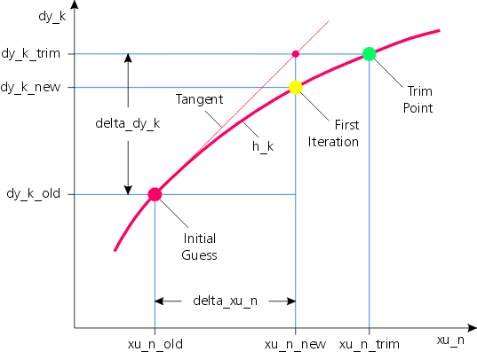

| Trim Model Toolbox | Search Help Desk |
| trimmod | Examples See Also |
Find trim point of Simulink system
Syntax
trimmod
h = trimmod
Description
trimmod
finds the trim point (equilibrium) of a Simulink system. When invoked
without left-hand arguments, trimmod opens a new figure with a graphical user
interface. The user can load a Simulink system (.mdl), define certain trim
point requirements and ask trimmod to calculate the corresponding trim point
variables that are necessary to satisfy the requirements. This trim point is then
automatically transferred to the "Simulation Parameters \\ Workspace I/O \\ Load from workspace" dialog box
("Input" and "Initial state") of the
corresponding Simulink system.
When invoked with a left-hand argument,
h = trimmod
opens the gui and additionally returns the handle of the figure.
Arguments
trimmod does not need any input arguments. The optional output argument is
the handle of the newly opened figure.
trimmodtrimtest.mdl: File; Open Model;
trimtest.mdl trimtest.mat: File; Load Trim Point;
trimtest.matMenu
| File; Open Model | Open a Simulink system via file select dialog box. |
| File; Load Trim Point | Load a trim point that has been previously saved, via file select dialog box. |
| File; Save Trim Point in ... | Save current trim point in a .mat-file whose name is the name of the
current Simulink system. It might be useful to save a newly defined trim point before
calling the trim algorithm because trim requirements and trim variables are modified by
the trim algorithm. (see Action; Untrim) |
| File; Save Trim Point as | Save current trim point via file select dialog box |
| File; Exit TrimMod | Game over. Ask user if he wants to save current trim point. |
| Action; Overview | Display an overview over all inputs, states, state derivatives, and outputs along with their pre- and post-trim values and the information, whether they are trim variable or trim requirements. |
| Action; Trim | Trim current Simulink system using current trim requirements and trim variables. It might be useful to save a newly defined trim point before calling the trim algorithm (see File; Save Trim Point in ...). |
| Action; Untrim | Countermand the effects of the previous trim. If trimming was not successful (because of bad starting guesses, unrealizable trim requirements, or linear dependencies), the trim algorithm aborts and the values in the gui represent the current (possibly totally wrong) state of the algorithm. This error state might be very useful for the analysis of trim problems, but a reload of the original trim point (via Load Trim Point or Untrim) might be necessary prior to the next trim cycle. |
| Options; Show Tooltips | Tooltips are very useful for the inexperienced user, but can become quite annoying after a while. Therefore, they can be switched off via a check button. |
| Help; Help on TrimMod | This manual. |
| Help; About TrimMod | The usual "about'-information: version, copyright, author, ... |
Algorithm
A nonlinear time invariant system can be described via its differential equation system
d = f (x, u) (1)
and its output equation system
y = g (x, u) (2)
where u is the input vector, x is the state vector, d = dx/dt is the time derivative of the state vector, y is the output vector, and f and g are nonlinear vector functions, evaluated every simulation time step. State vector x and input vector u are the independent variables on the right-hand side of the equations. Both vectors can be combined into a generalized input vector xu = [x; u]. Derivative vector d and output vector y are the left-hand side results of the function evaluations. They can be combined into the generalized output vector dy = [d; y].
Both equation systems can then be combined into
dy = h (xu) (3)
where h = [f; g] is the generalized system vector function.
To start a simulation, all elements of the generalized input vector xu (the complete x and u vectors) have to be known for the first evaluations of (3). Unfortunately, the trim point is often defined as a mixture of u, x, d, and y: The initial speed (x) of a car might be known, but not the corresponding engine power or the accelerator angle (u) for no acceleration (d). The radius of the curve might be predefined, but not the corresponding turning wheel angle, ... Usually the user initially defines some elements of the generalized output vector dy that have to be satisfied, and some elements of the generalized input vector xu that are known a priori. The other (unknown) elements of the generalized input vector xu have to be found by the trim algorithm. The unknown elements of the generalized output vector dy can then easily be calculated via equation (3), if xu is completely known.
Both generalized vectors can therefore be split up into a known (subscript "k") and an unknown (subscript "n") part:
dy = [dy_k; dy_n] (4)
xu = [xu_k; xu_n] (5)
Accordingly, equation (3) too can be split up into two (vector) equations, one for the predefined elements of dy and one for the unknowns:
dy_k = h_k (xu) = h_k ([xu_k; xu_n]) (3k)
dy_n = h_n (xu) = h_n ([xu_k; xu_n]) (3n)
The trim algorithms now has to solve the nonlinear equation system (3k) with respect to the unknown vector xu_n (called the trim variables vector), while the vector dy_k is called the trim requirements vector.
| Trim requirements dy_k | Those (known) elements of the generalized output vector dy that have to be satisfied |
| Trim variables xu_n | Those (unknown) elements of the generalized input vector xu that the trim algorithm is free to vary |
For a unique solution of equation (3k) the number of (unknown) trim variables (length
(xu_n)) has to equal the number of equations, given by the number of trim
requirements (length (dy_k)).
If this prerequisite is fulfilled, trimmod (the graphical user interface)
calls jj_trim (the actual trim algorithm).
As shown in Figure 1 below, the first step of jj_trim is
to put
in the initial guess of the trim variable vector xu_n_old on the right
hand side
of equation (3k) and to check whether the trim requirement vector dy_k_trim
is already met by dy_k_old. As this is usually not the case, a modified multidimensional
Newton-Raphson-algorithm is used to iteratively find new trim variable vectors xu_n_new
that - hopefully - finally approach the sought xu_n_trim.

Figure 1 One-dimensional Newton-Raphson step
Newton-Raphson relies on the local derivatives which can graphically be
represented as a tangent hyperplane
in the multidimensional case.
The linearization routine jj_lin finds the gradients of this tangent
hyperplane at xu_n_old and returns a sensitivity matrix (Jacobian-matrix) jaco,
which represents the linear relation
delta_dy_k = jaco * delta_xu_n (6)
of the trim requirement error
delta_dy_k = dy_k_trim - dy_k_old (7)
with respect to the trim variable correction
delta_xu_n = xu_n_new - xu_n_old (8)
A singular system decomposition (singular values and singular vectors) of the sensitivity matrix jaco is done, in order to find trim variables that have no influence on any trim requirement, trim requirements that cannot be influenced by any trim variable, and linear dependencies of trim variables or trim requirements. One or more singular values of zero indicate a wrong choice of trim requirements and/or trim variables. The corresponding singular vectors clearly show which trim requirements and trim variables are responsible for the rank deficiency. This detailed information can then be used to chose those trim requirements and trim variables that correctly describe the desired trim state.
If the sensitivity matrix jaco has full rank (is non-singular), the linear equation system (6) can be solved:
delta_xu_n = jaco \ delta_dy_k (9)
and equation (8) can be used to find the next solution vector:
xu_n_new = xu_n_old + delta_xu_n (10)
jj_trim Helper function, that does the
actual trimming
Helper function, that
linearizes a subsystem of a Simulink system
The trim
function of the Mathworks
[1] Buchholz, Jörg J., Hochschule Bremen, 2000.
[2] Mönnich, Wulf, and Buchholz, Jörg J., Simula, IB 111-91/28, Institute of Flight Research, DLR Braunschweig, 1991.
[3] Press, William H., et. al., Numerical Recipes, Cambridge, 1988.